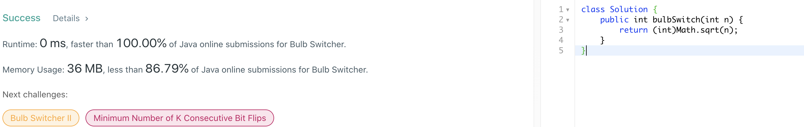

318. Maximum Product of Word Lengths
官方思路:
-
Optimize noCommonLetters function : Bitmasks + Precomputation
思路整理：
此题关键点在于如何判断两个string没有重复的字符，使用了一个巧妙的方法，即bitmasks。对于words中的每个word，我们用一个32位的bitmask来记录出现过哪些字符，具体做法为对word里的每个字符c，进行masks[i] |= 1 << c - 'a'操作。masks是一个长度为words的数组，专门用来存放bitmask。 c - 'a'是为了将字符转换对对应的数字（到a的距离），然后通过将1左移相应次数将bitmask中对应位置变为1，在通过 ｜= 操作更新bitmask对应位置。举个例子，abc会被转换为111，即a位置，b位置和c位置均出现过。通过将每个word转换为bitmask我们可以o（1）时间判断两个string是否有重复字符， 这就是bitmask操作的主要目的。之后剩下的就是找到最大长度，遍历所有两两组合，在不重复字符的情况下更新max即可，最后返回max。用bitmask表示字母字符串是此题的要点。

319. Bulb Switcher
官方思路:
-
寻找奇数个因数的数字个数
思路整理：
一道数论题，最后还on的灯一定只有奇数个质因数，根据数论基础就是完全平方数，也就是此题让找出不大于n的完全平方数个数，直接返回sqrt（n）即可。
320. Generalized Abbreviation
官方思路:
-
backtracking
思路整理：
典型backtrack题型，tricky的地方在于怎么把abbreviation和字母分开track，标答使用了一个单独的变量count用来记录目前abbreviation的数量。在backtrack时我们对每一个字母有两种处理方式，abbreviate和不abbreviate。abbreviate的话自然count++， count就是用来track当前abbreviation个数的用的，同时index+1后进入backtracking。另一种选择自然是不使用abbreviation，此时需要先把当前的（之前积攒的）count也就是abbreviation数加入cur，然后再将当前字母加入cur，再将count清零从新计数。完成这一系列 操作后才能进入backtracking。终止条件为index达到末尾也就是word.length()，此时先将count加入cur，再将cur加入答案，最后返回答案即可。

322. Coin Change
官方思路:
-
dp
思路整理：
注意此题是经典dp题型，greedy是不可行的，反例很容易找出不再赘述。dp的思路也很直接，使用bottom up的基本思想，从前n个位置推导出第n+1个位置的值。先创建一个dp数组长度为n+1表示每个amount最少用多少枚硬币可以组成。dp【0】自然为0，即不需要硬币就可以组合。从amount1到amountn就 进入dp主循环，每次更新一个位置（根据coins数组和dp数组前面已有位置信息）。对于每一个新位置dp【i】先将它的值设置为maxvalue，然后遍历coins数组，当i >= coins[j]并且dp[i - coins[j]] != Integer.MAX_VALUE 时更新dp【i】 值为Math.min(dp[i],dp[i-coins[j]]+1)。注意两个条件必须全部满足，第一个不满足会引起出界错误，第二个则是为了确保之前的位置确实是有值的不引起跟新混乱。这样每个dp【i】都被确实跟新为从前面amount可以使用一枚硬币达到时的硬币数，并且该值一定是全局最少的。遍历结束后我们直接判断 dp[amount]是否是dummy value（maxvalue），若是则没有组合可以达到amount返回-1，否则返回dp【amount】的值即可。
323. Number of Connected Components in an Undirected Graph
官方思路:
- dfs recursive
- bfs iterative
思路整理：
典型图搜索题，自然是dfs recursive 和 bfs iterative都可以。首先建立adjlist，使用常见的map实现即可。为了避免重复和无限循环，还是经典的visited set存储已经搜索过的node。接着就可以开始搜索，先看dfs。从0开始遍历所有的node，若该node没有被搜索过则代表着一块全新的componet，res++后 进入dfs搜索。dfs方法内部也是经典操作，先将当前node加入visited，然后从adjlist中拿到当前node全部neighbours，遍历并将其中未被搜索过（不再visited中）的beighbour进行递归dfs搜索，所有搜索结束后回到主方法，返回res即可。bfs使用传统的queue来进行iteration，还是对0到n-1所有node进行遍历， 若node未被搜索过，将node加入visited，res++后进入bfs搜索，在queue不为空时不断将当前node的邻居（为搜索过）加入队列。所有搜索结束后返回res。

324. Wiggle Sort II
官方思路:
-
dp
思路整理：
标答采用了215题 quickselect的思想来partition原数组后通过交换达到目的，以达到时间o（n）空间o（1）。这里看一个空间o（n）但是更自然简单的解法。首先创建一个数组复制，排序复制数组copy，之后选取中位数所在index将数组partition成两部分。选取左半部分最后一个index作为left，有半部分最后一个index 作为right，遍历原数组，将偶数位置更改为copy【left】，奇数位置更改为copy【right】，每修改一个位置left或者right对应--。一轮修改完成后原数组必然符合wiggle sort要求，且时间方面和quickselect相差不大。